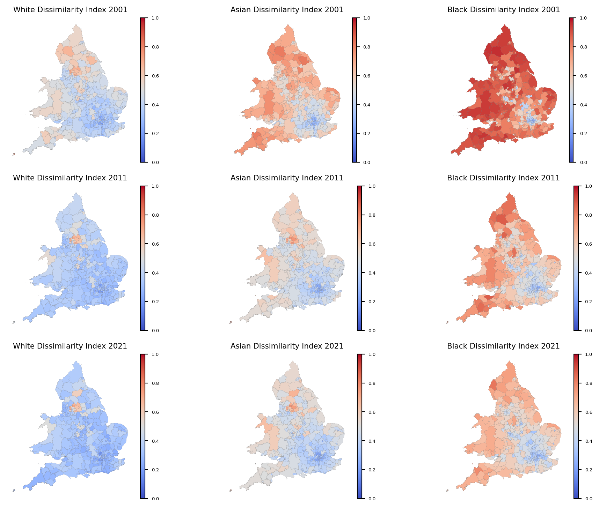
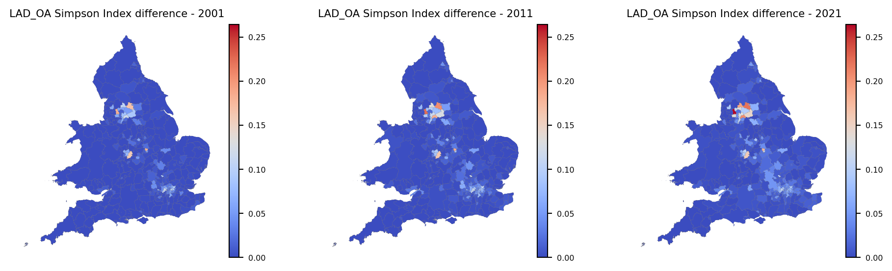
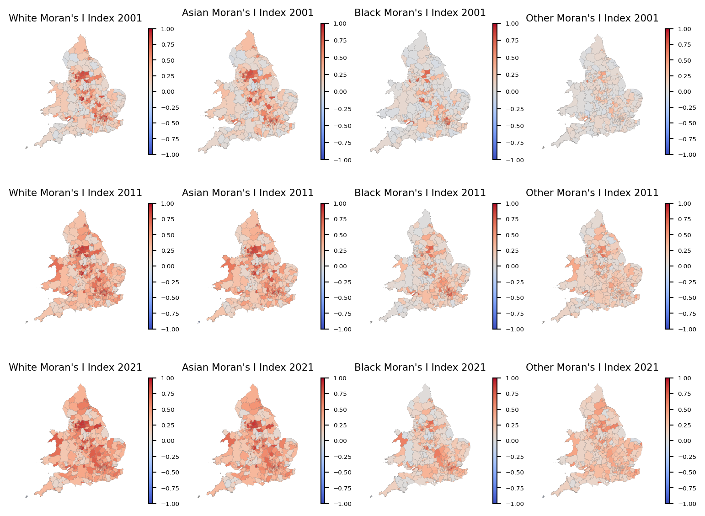
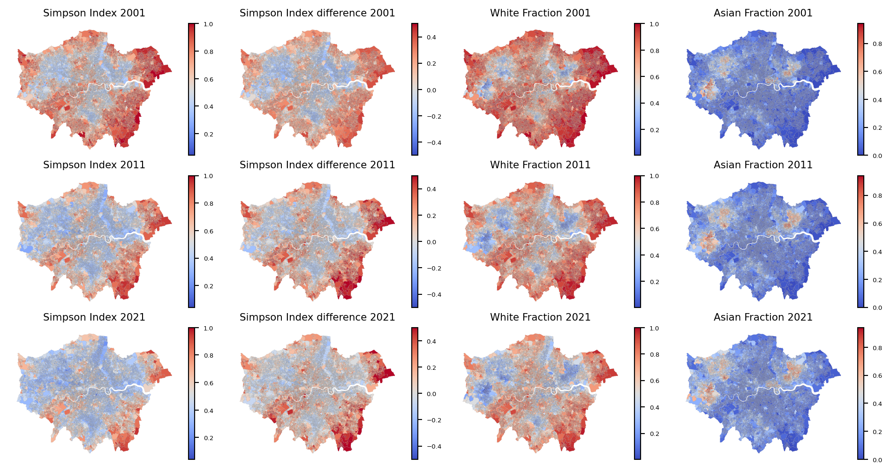
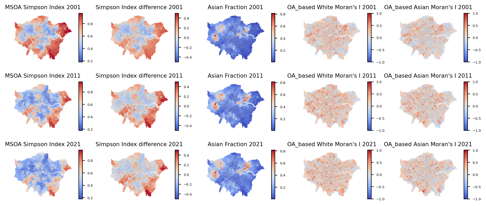
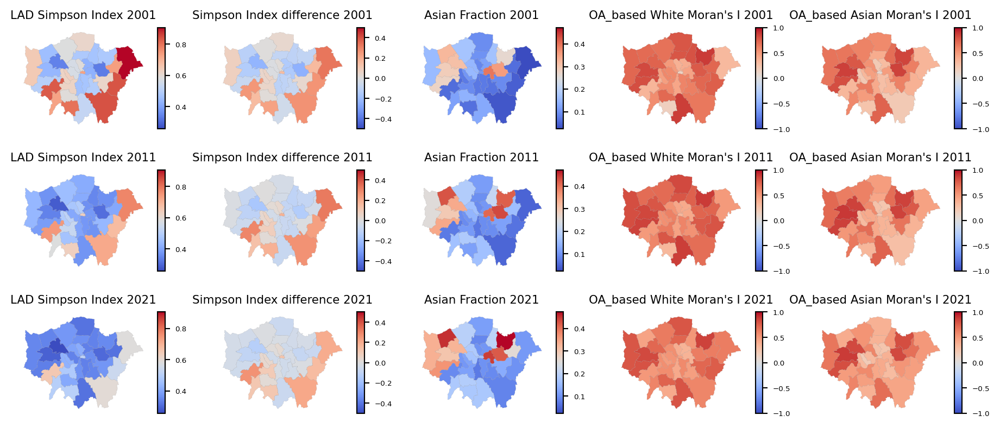
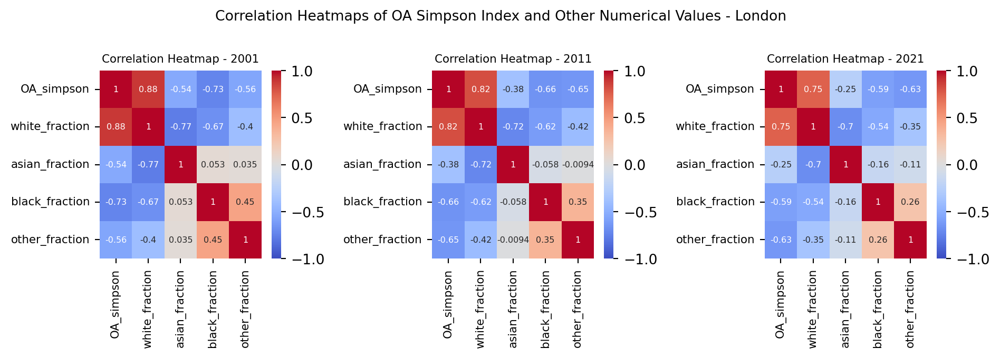

Segregation, particularly residential segregation, refers to the spatial separation of different social groups within a city or metropolitan area.
Results in the clustering of individuals from similar socioeconomic backgrounds or ethnicities in distinct neighbourhoods or regions.
Spatial separation mirrors the way societies are organized, produce and distribute resources. (Piekut 2021)
In this thesis, the ethnic segregation of England and its changes during the time will be observed.
Census data (2001, 2011 and 2021) available in geographical areas (OA, LSOA, MSOA and LAD)
Output Areas (OA) were created for Census data, specifically for the output of census estimates. The OA is the lowest geographical level at which census estimates are provided, typically encompassing approximately 300 people.
Super Output Areas (SOA) are a geography hierarchy designed to improve the reporting of small-area statistics. Lower Layer SOAs (LSOA) has a minimum population of 1,000 and Middle Layer SOAs (MSOA) contains a minimum population of 5,000. LSOAs and MSOAs are of consistent size across the country and will not be subject to regular boundary change.
Local Authority District (LAD) or also known as local government districts (to distinguish from unofficial city districts) are a level of subnational division of England used for the purposes of local government.(“Districts of England,” n.d.)
Within this spatial framework, we examine the distributions of four ethnic groups. These ethnic categories stem from a larger pool of 16 to 19 groups, each representing distinct classifications based on various criteria such as country of ancestry and skin colour.(ones et al. 2015).
Census Data: The dataset provides information about the ethnic group of the usual resident population of England and Wales as at census day. It contains the OA codes and the observation of ethnic groups in each OA.(“Census Data in England and Wales,” n.d.)
Lookup: This file links and aggregate data at different geographic levels (e.g., from OA to larger areas like LSOAs or MSOAs) for spatial analysis.(“Open Geography Portal,” n.d.)
Census boundaries (Shape Files): This file contains the polygons of boundaries of each OA.(“Open Geography Portal,” n.d.)
A demographic measure of the evenness
Score between 0 and 1, 0 reflects a fully integrated environment; a score of 1 reflects full segregation
Example: In terms of black–white segregation, a score of 0.60 means that 60 percent of blacks would have to exchange places with whites in other units to achieve an even geographic distribution. (“Index of Dissimilarity,” n.d.)
This index is calculated using the following formula:
\[ D^X = \frac{\sum_{i} \frac{N_i}{N_{\text{Area}}}|P_i^X - P_{\text{Area}}^X|}{2P_{\text{Area}}^X(1-P_{\text{Area}}^X)}\ \]
\(P_i^X\): Fraction of individuals for ethnic group \(X\) in \(sub\_area_i\)
\(P_{\text{Area}}^X\): Fraction in the whole area
\(N_i\): Number of individuals in \(sub\_area_i\)
\(N_{\text{Area}}\): Number of individuals in the whole geographical area
The denominator is to normalize the Dissimilarity index to lie between zero and one.(Zuccotti et al. 2021)

A measure of ethnic concentration
Score between 0 and 1
Expresses the probability that two randomly selected individuals from the geographic area have the same ethnicity.
This Average Local Simpson Index is calculated using the following formula:
\[ S = {\sum_{i} (\frac{N_i} {N_{\text{Area}}} {\sum_{X} (P_i^X)^2})} \]
\(S_i = {\sum_{X} (P_i^X)^2}\): Simpson Index for each \(sub\_area_i\)
The lower \(S_i\), the more ethnically diversity
The maximal value is achieved when the district is populated exclusively by one ethnic group.
To calculate this index, “Other” ethnic groups is left outside. It has been done upon the consideration that individuals from this group are less likely to recognize each other as similar in terms of ethnic preferences.(Zuccotti et al. 2021)
For each LAD, OAs, LSOAs, and MSOAs were considered as the subareas of interest.

A statistical measure used to assess spatial autocorrelation. Spatial Autocorrelation means looking at how similar or dissimilar values of a variable are in neighbouring locations.
Score between -1 and 1, determines whether the observed pattern of spatial autocorrelation indicates clustering (similar values close together), dispersion (dissimilar values close together), or randomness (no discernible pattern)
Moran’s I Index is calculated using the following formula:
\[ Moran's I^X = \frac{L}{W} \frac{\sum_{i} \sum_{j} w_{ij} (P_i^X - \overline{P}^X)(P_j^X - \overline{P}^X)}{\sum_{i} (P_i^X - \overline{P}^X)^2} \]
\(P_i^X\): Fraction of individuals for ethnic group \(X\) in \(district_i\)
\(\overline{P}^X\): Average of fraction of the ethnic group \(X\) in all \(districts\).
\(w_{ij}\): is one when \(districts\) \(i\) and \(j\) share a border and zero otherwise.
\(L\): Number of \(district\)
\(W\): Number of positive \(w_{ij}\). (Zuccotti et al. 2021)
The NaN value for each subarea’s Moran’s I indicates subareas with a population count of zero for a specific ethnicity.





In all cities, the fraction of white ethnicity is predominent and regarding the following table, the correlation between Simpson Index and white ethnicity is positive and rather strong. By 2021, this correlation in Leicester turns negative as the Asian ethnic fraction surpasses the White ethnic fraction, resulting in a positive correlation (0.45) with the Asian fraction.
| Year | Birmingham | Leicester | Bradford | Blackburn | Oldham | Pendle | London |
|---|---|---|---|---|---|---|---|
| 2001 | 0.75 | 0.54 | 0.73 | 0.70 | 0.74 | 0.87 | 0.88 |
| 2011 | 0.66 | 0.20 | 0.65 | 0.61 | 0.58 | 0.81 | 0.82 |
| 2021 | 0.53 | -0.27* | 0.60 | 0.52 | 0.59 | 0.78 | 0.75 |
Comprehensive Analysis: Segregation indexes examined at country, LAD, and city levels in England.
Dissimilarity Index Trends: Decrease in values for White, Asian and Black ethnicities, indicating increased integration.
Simpson Index Findings: Higher values in homogeneous OAs; overall diversity balanced out across all OAs.
Spatial Scale Effects: Higher Moran’s I at local scales (OAs) vs. broader scales (LSOAs).
Overall Trends (2001-2021): Positive movement towards greater ethnic cohesion and reduced segregation; persistent localized clustering at OA level.